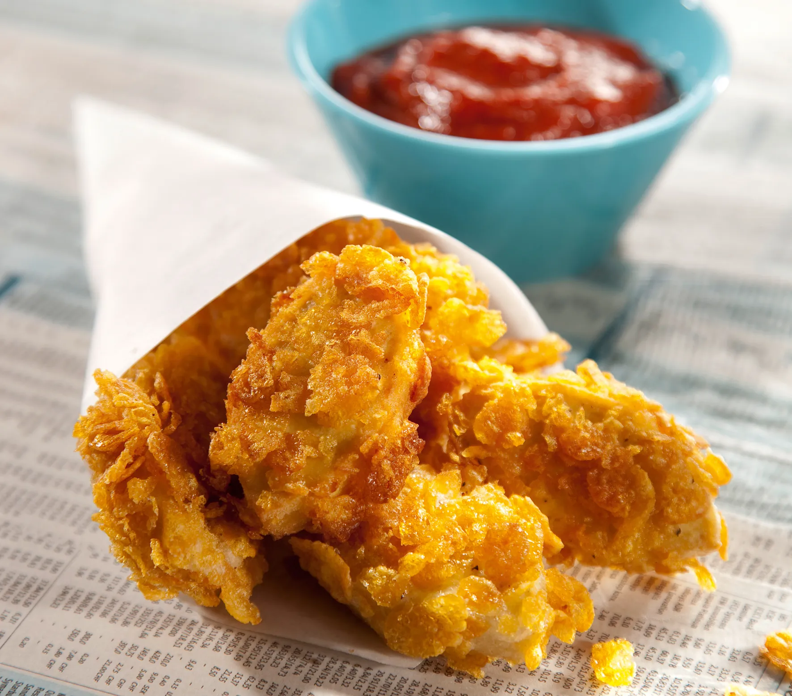

Tofu Nuggets

While these are not the ultimate chicken nugget dupe (tofu is tofu), I am obsessed with their supremely and crispy cereal-crust. Put your trust in tofu!
Makes 2-4 servings
Press excess water out of tofu by wrapping in paper towels and setting a weight on it for about 5-10 minutes:
Whisk batter together and set aside in a wide flat dish or bowl:
- 3/4 cup all-purpose flour
- 1 1/2 tsp sugar
- 1 1/2 tsp sea salt
- 1/2 tsp garlic powder
- 1/2 tsp onion powder
- 1/2 cup non-dairy milk